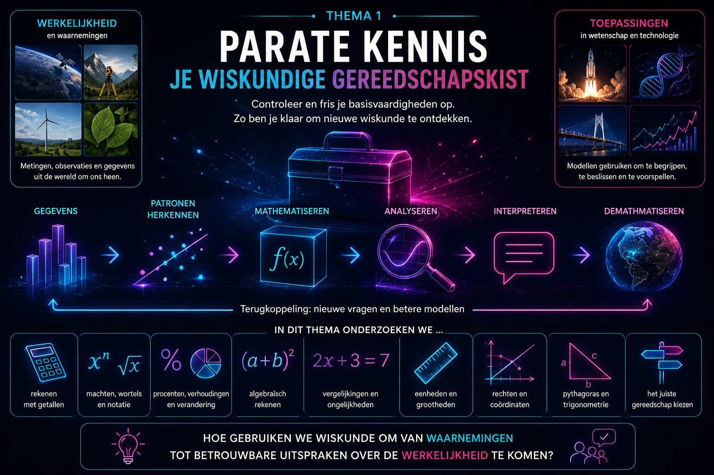
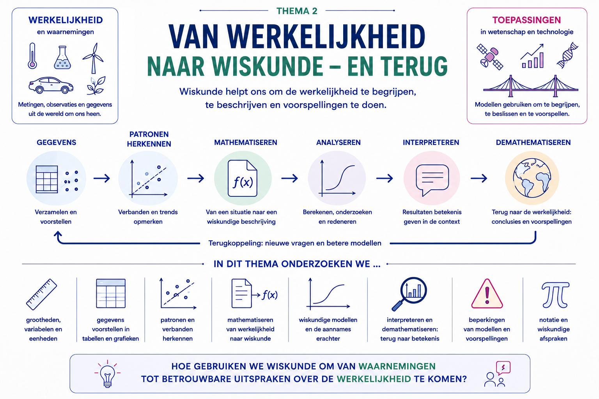
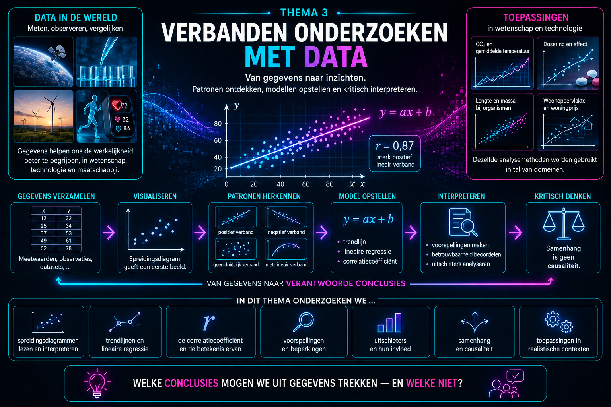

Overzicht van de hoofdstukken
Wiskunde bouwt voort op wat je al kent.
In de volgende thema’s gaan we nieuwe begrippen onderzoeken: verbanden in data, functies, nulpunten, tekenverloop, limieten, asymptoten en nog veel meer. Daarbij willen we niet telkens moeten stoppen omdat een breuk, een macht of een vergelijking in de weg zit.
Daarom zetten we eerst je wiskundige gereedschapskist klaar.
In dit thema leer je de technieken uit vorige jaren niet opnieuw van nul. Je controleert vooral of je ze nog voldoende paraat beheerst.
Denk bijvoorbeeld aan:
Je moet zelf kunnen herkennen welk gereedschap bruikbaar is. Daarom oefenen we in dit thema ook op:
Aan het einde van het thema combineren we verschillende technieken in één probleem. Zo maken we de overstap van losse rekenvaardigheden naar het echte wiskundige probleemoplossen dat je in het vijfde jaar steeds vaker nodig zult hebben.
Thema1-Parate-kennis/Parate-kennis Thema1-Parate-kennis/Parate-kennis-oefeningen

Overzicht van de hoofdstukken
Waarom beginnen we bij de werkelijkheid?
Wiskunde lijkt op het eerste gezicht vaak te beginnen met getallen, formules en grafieken. In de wetenschappen loopt de weg meestal andersom.
We vertrekken van een vraag over de werkelijkheid. We meten grootheden, verzamelen gegevens en zoeken naar patronen. Pas daarna proberen we die patronen met wiskunde te beschrijven.
Een tabel met meetwaarden kan bijvoorbeeld suggereren dat twee grootheden met elkaar samenhangen. Een grafiek kan het gedrag van dat verband zichtbaar maken. Een formule kan vervolgens toelaten om waarden te berekenen of voorspellingen te maken.
In dit thema onderzoeken we daarom eerst hoe de brug tussen werkelijkheid en wiskunde wordt gebouwd.
We besteden aandacht aan:
Daarbij ontdekken we meteen een belangrijk principe dat doorheen de volledige cursus zal terugkeren: een wiskundig model is niet de werkelijkheid zelf. Het is een vereenvoudigde beschrijving waarmee we bepaalde vragen over die werkelijkheid proberen te beantwoorden.
Daarom eindigt een wiskundig probleem ook niet wanneer de berekening klaar is. We moeten terugkeren naar de oorspronkelijke situatie en ons afvragen of het resultaat betekenisvol en redelijk is.
Zo ontstaat een manier van werken die we later opnieuw zullen gebruiken bij gegevens, functies, limieten, afgeleiden, integralen en andere wiskundige modellen:
Hoe gebruiken we wiskunde om van waarnemingen tot betrouwbare uitspraken over de werkelijkheid te komen?
Thema2-Modelleren/Werkelijkheid-terug

Overzicht van de hoofdstukken
Van gegevens naar een verantwoorde conclusie
In wetenschappen verzamelen we voortdurend gegevens.
We meten bijvoorbeeld temperatuur en energieverbruik, concentratie en absorbantie, instraling en elektrisch vermogen, of twee kenmerken van een groep personen.
Een tabel met meetwaarden is echter nog geen antwoord.
We willen ontdekken of er in die gegevens een verband zit, hoe sterk dat verband is en of we het met een wiskundig model kunnen beschrijven.
In dit thema bouwen we die analyse stap voor stap op.
We beginnen met gekoppelde gegevens en stellen ze voor in een spreidingsdiagram. Zo wordt een mogelijk verband zichtbaar en leren we kijken naar richting, vorm, sterkte en bijzonderheden in een puntenwolk.
Wanneer het verband ongeveer lineair is, gebruiken we vervolgens de correlatiecoëfficiënt om de richting en sterkte van die lineaire samenhang nauwkeuriger te beschrijven.
Daarna gaan we een stap verder. Met lineaire regressie bouwen we uit de gegevens een wiskundig model:
Zo’n model laat ons toe om het globale patroon samen te vatten, parameters in hun context te interpreteren en voorspellingen te maken.
Maar een berekening of model is nooit het einde van het verhaal.
Een sterke correlatie betekent bijvoorbeeld niet automatisch dat de ene grootheid de andere veroorzaakt. Ook voorspellingen buiten het gebied waarin gemeten werd, kunnen misleidend zijn.
Daarom leren we voortdurend kritisch terugkeren naar de oorspronkelijke situatie:
Doorheen het thema onderzoeken we dus niet alleen hoe we gegevens wiskundig analyseren, maar vooral ook wat we uit die analyse werkelijk mogen besluiten.
Hoe maken we van een verzameling gegevens een wiskundig onderbouwde én wetenschappelijk verantwoorde conclusie?
Thema3-Verbanden/Van-data-naar-puntenwolk Thema3-Verbanden/Van-data-naar-puntenwolk-oefeningen Thema3-Verbanden/Correlatie Thema3-Verbanden/Correlatie-oefeningen Thema3-Verbanden/Lineaire-regressie Thema3-Verbanden/Lineaire-regressie-oefeningen Thema3-Verbanden/Samenhang-oorzaak Thema3-Verbanden/Samenhang-oorzaak-oefeningen
Overzicht van de hoofdstukken
Overzicht van de hoofdstukken
Overzicht van de hoofdstukken
Overzicht van de hoofdstukken
Overzicht van de hoofdstukken
Overzicht van de hoofdstukken
Overzicht van de hoofdstukken